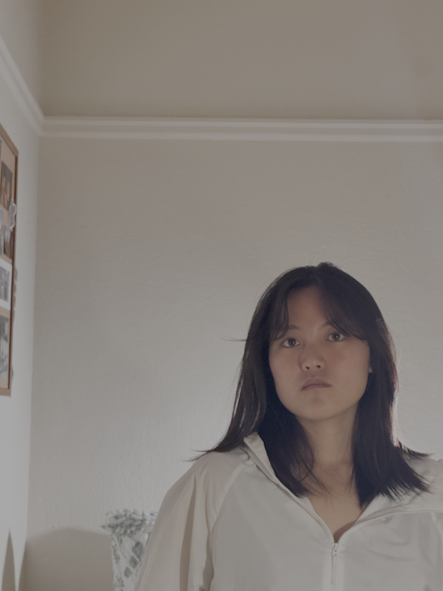
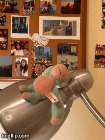

Wrong way: camera around 27 inches from face, no zoom.

Right way: camera about 8.2 feet away, zoomed in to match face size.
Wrong way: camera around 27 inches from face, no zoom.

Right way: camera about 8.2 feet away, zoomed in to match face size.
Since the distance to the face is different across the two cases, the relative closeness of my nose to the lens compared to my ears or hairline is so different (more pronounced in close-up, and less pronounced in far-zoomed) that the close-up selfie distorts my facial features while the far-zoomed one keep them balanced.

Zoomed-in buidling from far away

Close-up Building
When far from the porch, the light rays from the front and back corners enter the camera at little angle difference, so the porch looks like it has less depth. On the other hand, when up close, the angle difference that both light rays enter is much wider, and also the same physical depth between the front and back corners of the porch takes a larger fraction of the camera's distance to the porch. So, the porch looks like it has more depth.
